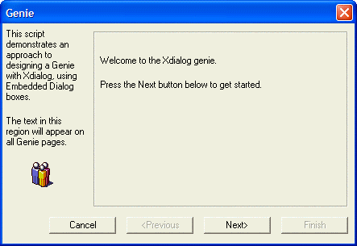
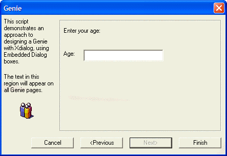
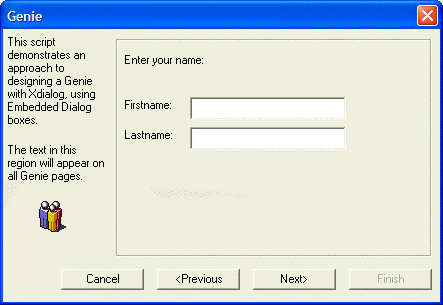

Creating a Genie Dialog Box
This next example shows how a "genie" dialog can be created.

Lesson 17: Creating a Genie dialog box - Page 1

Lesson 17: Creating a Genie dialog box - Page 2

Lesson 17: Creating a Genie dialog box - Page 3
Below is the script to produce this genie. The script is quite long, but do not let its length intimidate you. It is actually quite simple. One key aspect of the script is the use of functions defined within the script to help make the code more readable.
Notice that near the top of the script we execute the command:
vl = local_variables() |
This command creates a pointer to all of the local variables in the script. We pass this pointer in to all of the functions that we call in the script. By doing this, the function can see and set local variables in the script.
page = 1 max_pages = 3 'flag controls if you can move off the current genie page. dim genie_stay as L genie_stay = .f. dim error_message as C 'error message if you try to move off the current page when all 'conditions have not been met. error_message = "" vl = local_variables() define_pages(vl) set_flags(vl) ui_dlg_box("Genie",<<%dlg% {startup=init} {region0} {region1} {wrap=20}; This script demonstrates an approach to designing a Genie with Xdialog, using Embedded Dialog boxes.; {lf}; The text in this region will appear on all Genie pages.; {lf}; {image=group} {endregion1}|{sp}| {frame=1,1} {region3} {embedded=60,15genie} {endregion3}; {region} {endregion}; {endregion0}; {region} {justify=right}<15&Cancel> <15<&Previous!previous?flag_previous> <15&Next\>!next?flag_next> <15&Finish?flag_finish> {endregion} %dlg%, <<%code% if a_dlg_button = "finish" then end if if a_dlg_button = "init" then a_dlg_button = "" show_page(vl,1) end if if a_dlg_button = "next" then a_dlg_button = "" page = page + 1 if page > max_pages then page = max_pages end if show_page(vl,page) end if if a_dlg_button = "previous" then a_dlg_button = "" page = page - 1 if page < 1 then page = 1 end if show_page(vl,page) end if %code%) function show_page as C (vars as P, page as N ) with vars if genie_stay = .f. then temp_code = eval("page_"+page) evaluate_template(temp_code) set_flags(vl) else ui_msg_box("Error",error_message,UI_STOP_SYMBOL) end if end with end function function define_pages as C (vars as P) with vars page_1 = <<%dlg2% ui_modeless_dlg_box("genie",<<%dlg% {cellspillover=on} {lf}; Welcome to the Xdialog genie.; {lf}; Press the Next button below to get started.; %dlg%,<<%code% 1=1 %code%) %dlg2% page_2 = <<%dlg2% ui_modeless_dlg_box("genie",<<%dlg% {cellspillover=on} Enter your name:; {lf}; {lf}; Firstname: | .30fname; {lf}; Lastname: | .30lname; %dlg%,<<%code% 1=1 %code%) %dlg2% page_3 = <<%dlg2% ui_modeless_dlg_box("genie",<<%dlg% {cellspillover=on} Enter your age:; {lf}; {lf}; Age: | .30age; {lf}; %dlg%,<<%code% 1=1 %code%) %dlg2% end with end function function set_flags as C (vars as P) with vars if page = max_pages flag_finish = .t. flag_next = .f. flag_finish = .t. flag_previous = .t. else if page = 1 then flag_next = .t. flag_previous = .f. flag_finish = .f. else flag_next = .t. flag_previous = .t. flag_finish = .f. end if end with end function |
Next
A Genie Style Dialog with Tabs
Supported By
Alpha Five Version 5 and Above
Limitations
Desktop applications only.